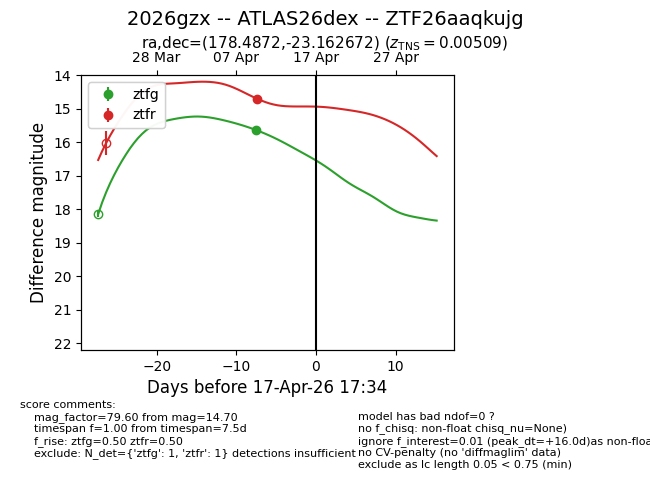
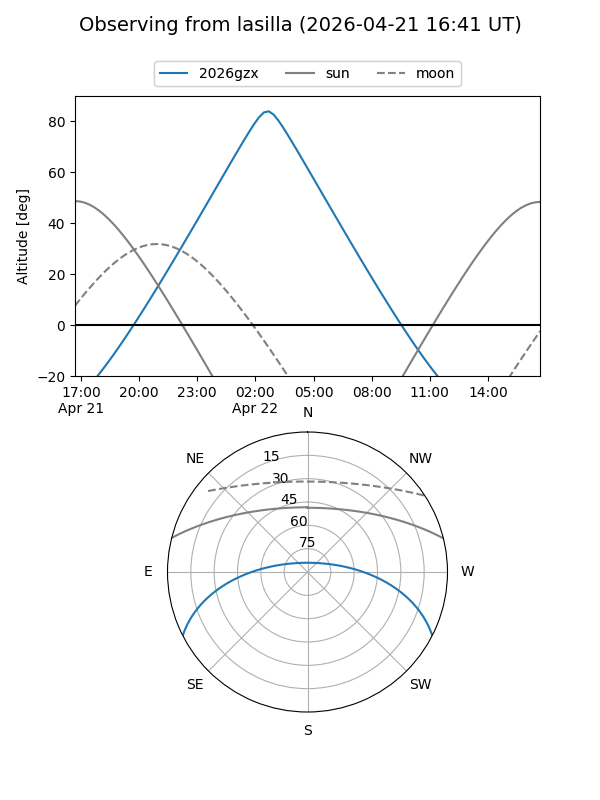
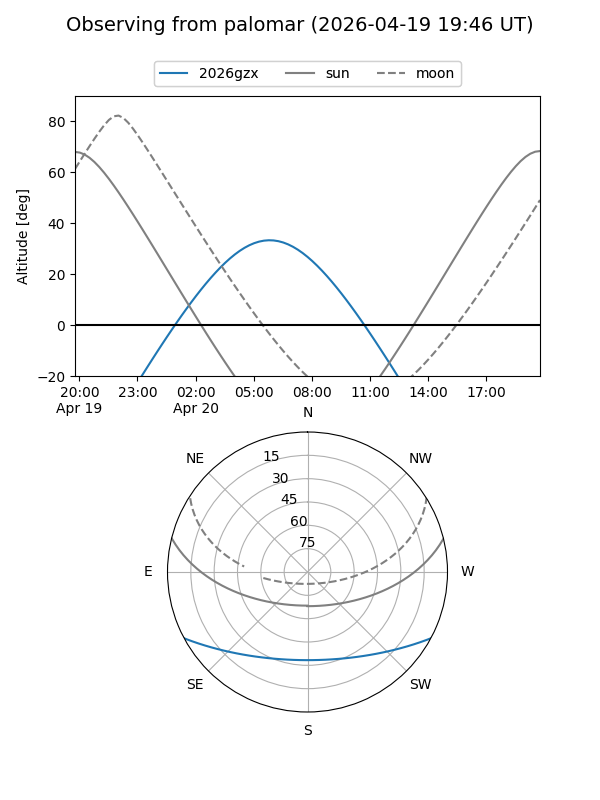
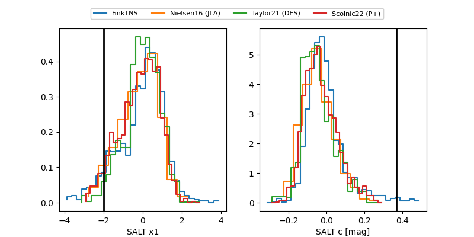

2026gzx
Target 2026gzx at 2026-04-17 17:39
Aliases and brokers:
FINK: link
Lasair: link
ALeRCE: link
TNS: link
YSE: link
alt names
ZTF26aaqkujg (ztf,fink_ztf)
2026gzx (tns,yse)
ATLAS26dex (atlas)
Coordinates:
equatorial (ra, dec) = 178.4872,-23.16267
equatorial (HMS+DMS) = 11:53:56.92,-23:09:45.62
galactic (l, b) = (286.1382,+37.82713)
Flags:
Photometry:
last ztfg=15.64, ztfr=14.70
1 ztfg, 1 ztfr detections
Lightcurve

Visibility


Additional plots
